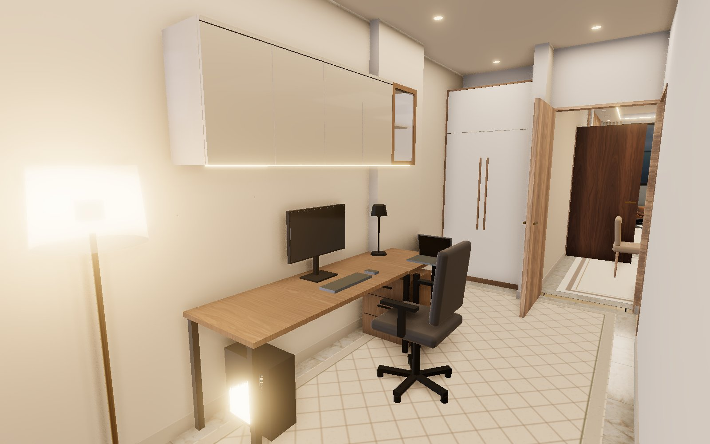
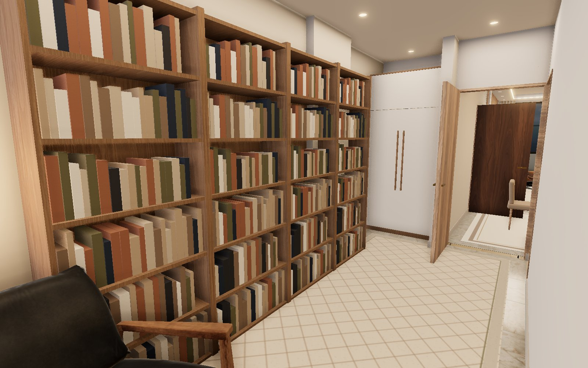
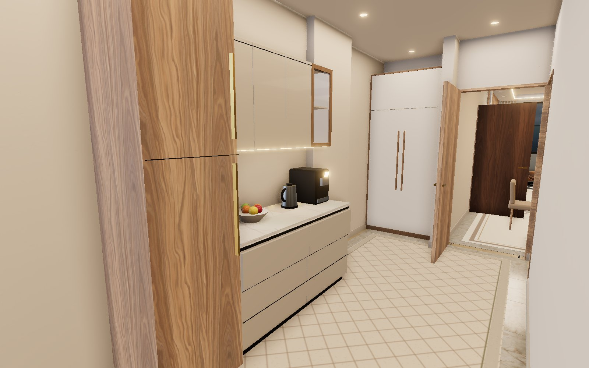
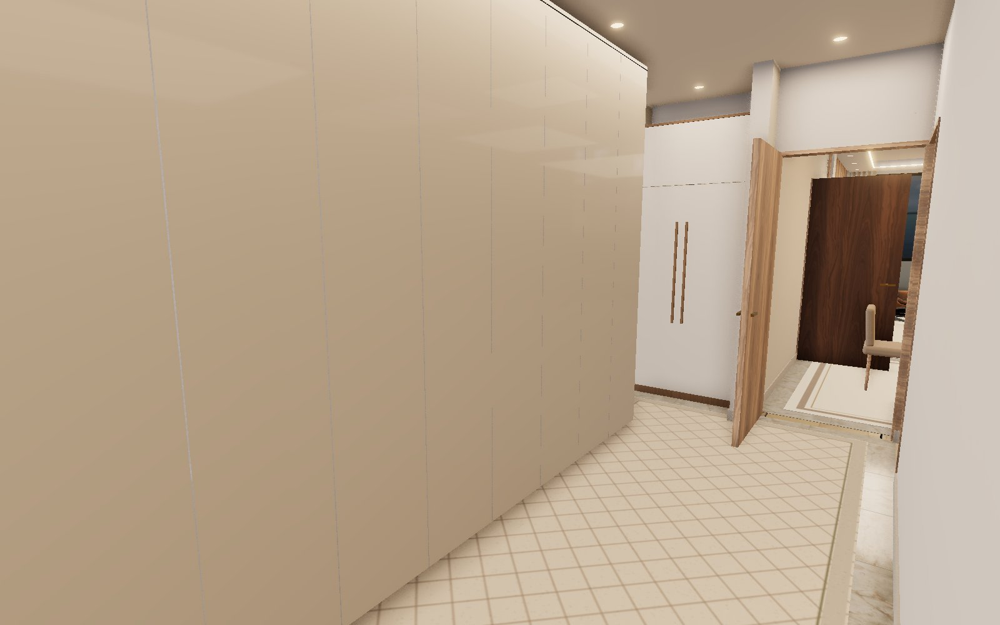
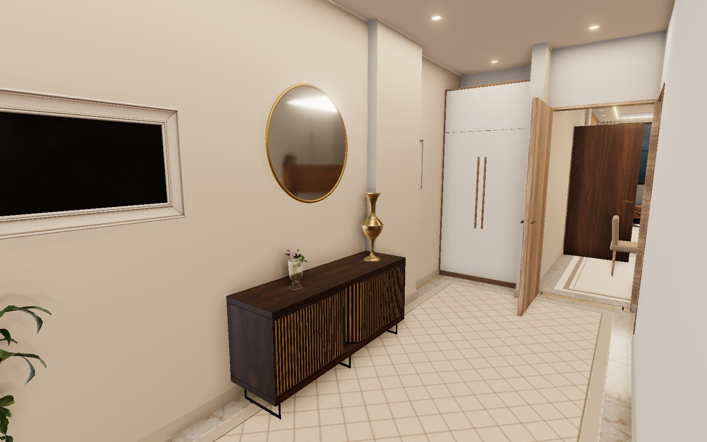
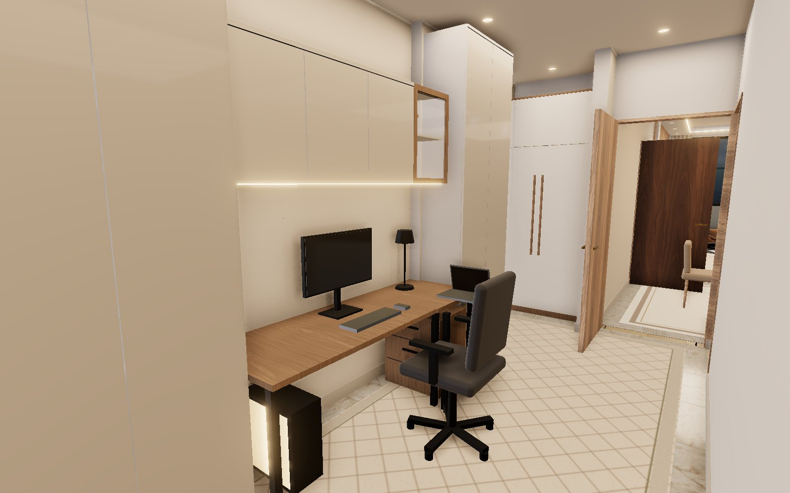

Corridor ideas — real renders of your corridor
Tell me the number you like. ← back to the 3D apartment

1 · Home-office desk
2.2 m oak desk with PC + laptop, wall cabinets with LED above, office chair. 1.6 m walkway left free. Frees the bedroom.

2 · Library wall + reading corner
Four oak bookcases to 2.4 m along the wall, armchair, floor lamp and side table at the end.

3 · Coffee / drinks station
Worktop with coffee machine and kettle, tall fridge column, wall cabinets with a glass door above. Takes load off the kitchen.

4 · Hidden storage wall
Floor-to-ceiling handleless cream cabinets, 3.8 m long — looks like a panelled wall. For vacuum, suitcases, bedding.

5 · Gallery walk
Walnut fluted sideboard, round brass mirror, framed art either side, vase, flowers and a plant. Decorative only.

6 · Recommended mix
Desk with cabinets above in the middle, tall storage cupboards at both ends. Work + storage in one wall.